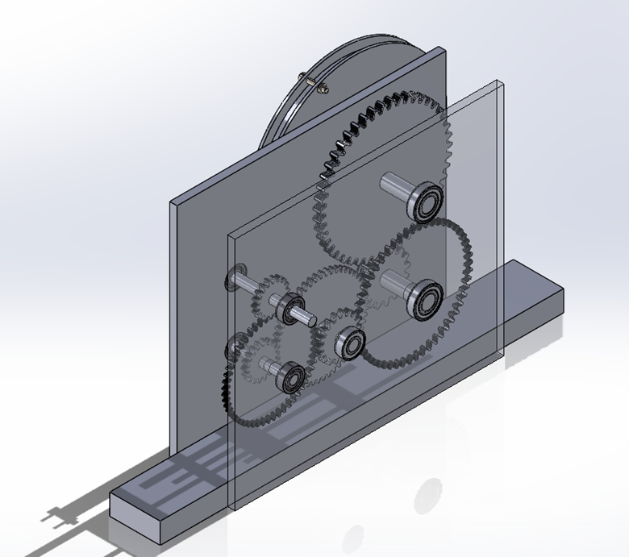
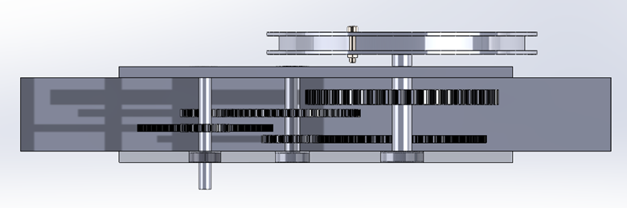
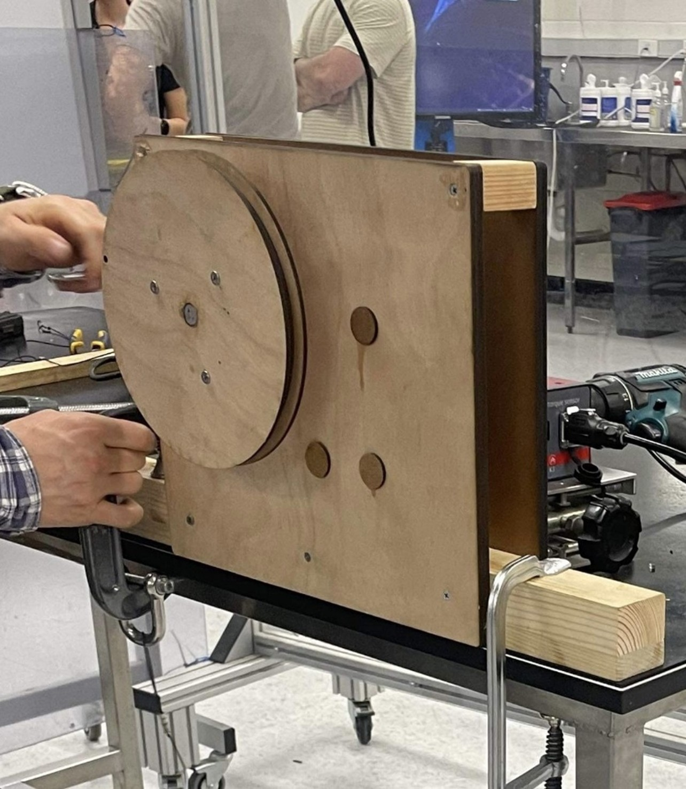
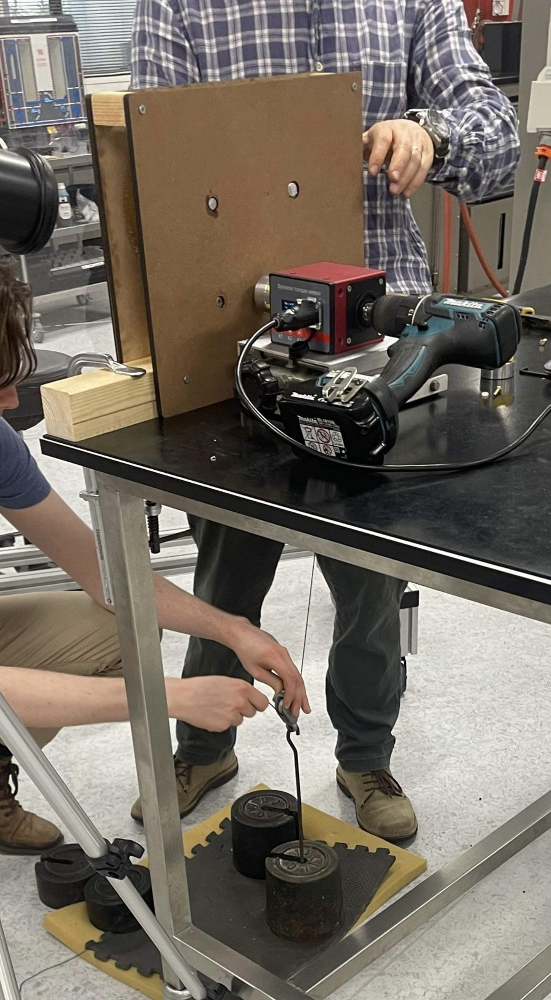
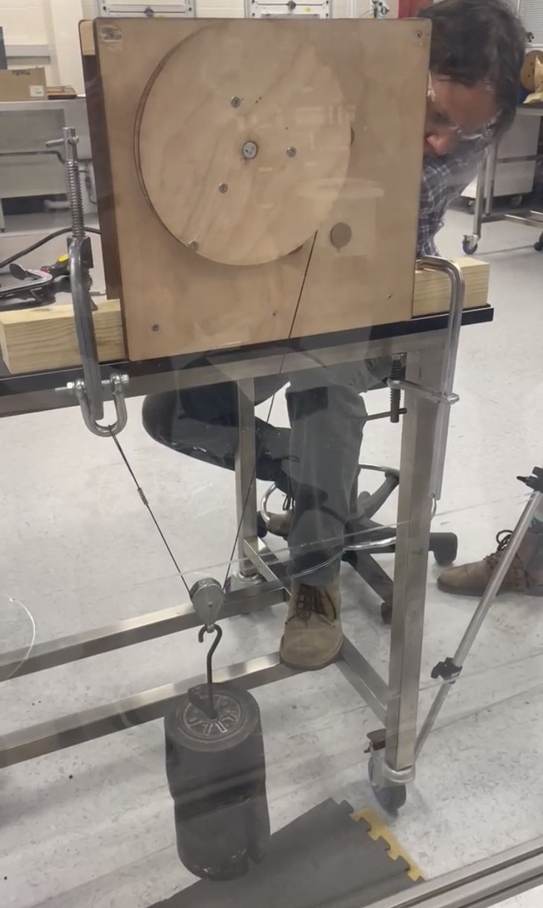
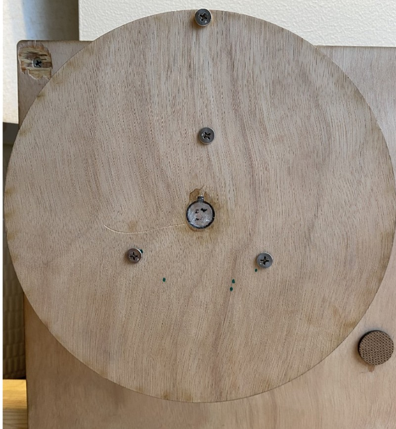
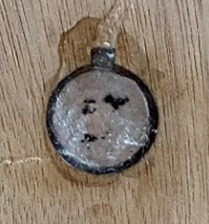
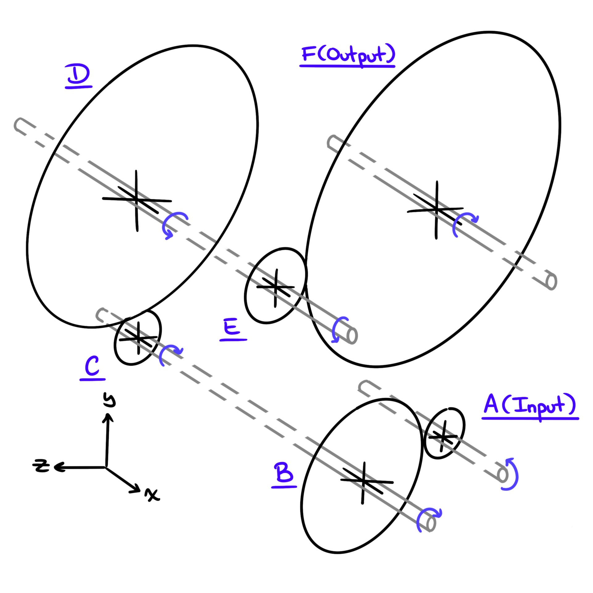

Mechanics of Materials
What are These?
These are worked examples of some mechanics of materials problems. They serve to provide insights into how equations I listed can be used. They might not cover all equations, but should provide a good basic overview.
Some images on this page are large! For the best experience, resize this site to half your screen.
Shaft and Spur Gear Fatigue Analysis
*The working below comes from a team project, however all modeling and calculations presented are my sole work.
I led the design and prototyping of the gearbox below for a class back in 2023. Its a 4-stage 75x reduction gearbox. I'll run you through some basic analysis below the images.
 Prototype Failure & Testing (just for fun)
Here's our prototype we put together in the lab. Made of HDF, acrylic aluminum.
Gearbox rigged for testing under separate 5kg, 10kg, 15kg, and 20kg loads
It lifts!
 Keyway on output pulley failed under 15kg load. This is because we were too focused on analyzing gears and shafts. Make sure to follow the full path of stress flow.
Shafts & Gears - Static Failure Analysis
Necessary Background Info
This is a rough schematic of the shaft/gear system inside the gearbox. Shaft/Gear labeling will help you follow through the solution process.
Here are system parameters I calculated for the gears in excel. Columns titled a, b, c, etc, refer to gears a, b, c, etc. These params inform shaft and gear analysis heavily. There is some discrepancy between Excel listed forces and those in the hand calcs, but they should be close enough to follow along.

Shafts - Static Failure Analysis
This is an example of static failure analysis for the gearbox input shaft. See 'Necessary Background Info' if you're wondering where loading params come from.
More Examples of Shaft Statics Failure Analysis
Gears - Static Failure Analysis
This is the basic process for static failure analysis of gears. Unfortunately its a little disjointed, but the process is conveyed. Lewis form factor chart should be in the 'Tables & Charts' tab.
Shafts & Gears - Fatigue Analysis
Shaft Fatigue Analysis

More Examples of Shaft Fatigue Analysis


Gear Fatigue Analysis
This gear fatigue follows the AGMA standard, so you'll need some charts & tables. I'll link to relevant external references in Tables & Charts Tab, but they're easy to find online if these links go down.
Search for:
- ASME Standard (its for gears)
- Dynamic Form Factor, Kv
- Overload Factor, Ko (theres a useful chart out there)
- Load Distribution Factor, Km

More Examples of Shaft Fatigue Analysis